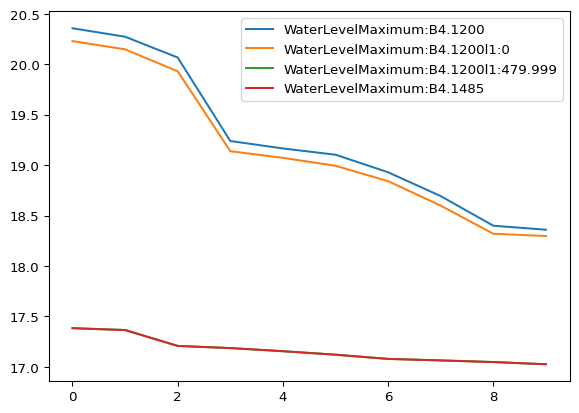
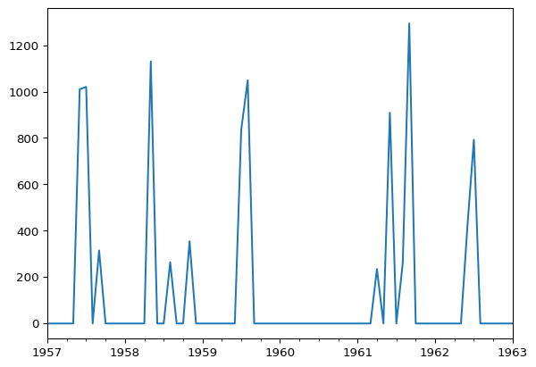

import mikeio1dRes1D - long term statistics (LTS)
Read and plot LTS results.
Event statistics
res = mikeio1d.open("../data/lts_event_statistics.res1d")
res.info()Start time: 1957-01-01 00:00:00
End time: 1963-01-01 00:00:00
# Timesteps: 10
# Catchments: 0
# Nodes: 16
# Reaches: 17
# Globals: 0
0 - Water level, Maximum (m)
1 - Water level, Maximum, Time (sec)
2 - Discharge, Integrated (m^3)
3 - Discharge, Integrated, Time (sec)
4 - Discharge, Maximum (m^3/s)
5 - Discharge, Maximum, Time (sec)
6 - Discharge, Duration (h)
7 - Discharge, Duration, Time (sec)
8 - Component_1, Maximum (kg/m^3)
9 - Component_1, Maximum, Time (sec)
10 - Component_2, Maximum (kg/m^3)
11 - Component_2, Maximum, Time (sec)
12 - Component_1, Transport, Integrated (kg)
13 - Component_1, Transport, Integrated, Time (sec)
14 - Component_2, Transport, Integrated (kg)
15 - Component_2, Transport, Integrated, Time (sec)
16 - Surcharge, Maximum (m^3/s)
17 - Surcharge, Maximum, Time (sec)
18 - Surcharge, Integrated (m^3)
19 - Surcharge, Integrated, Time (sec)
20 - Surcharge, Duration (h)
21 - Surcharge, Duration, Time (sec)
22 - Flow velocity, Maximum (m/s)
23 - Flow velocity, Maximum, Time (sec)df = res.read()
df.head()| WaterLevelMaximum:A0.0327 | WaterLevelMaximumTime:A0.0327 | DischargeIntegrated:A0.0327 | DischargeIntegratedTime:A0.0327 | DischargeMaximum:A0.0327 | DischargeMaximumTime:A0.0327 | DischargeDuration:A0.0327 | DischargeDurationTime:A0.0327 | Component_1Maximum:A0.0327 | Component_1MaximumTime:A0.0327 | ... | Component_1MaximumTime:Pump:B4.1510p2:0 | Component_1MaximumTime:Pump:B4.1510p2:80.0006 | Component_2Maximum:Pump:B4.1510p2:0 | Component_2Maximum:Pump:B4.1510p2:80.0006 | Component_2MaximumTime:Pump:B4.1510p2:0 | Component_2MaximumTime:Pump:B4.1510p2:80.0006 | Component_1TransportIntegrated:Pump:B4.1510p2:40.0003 | Component_1TransportIntegratedTime:Pump:B4.1510p2:40.0003 | Component_2TransportIntegrated:Pump:B4.1510p2:40.0003 | Component_2TransportIntegratedTime:Pump:B4.1510p2:40.0003 | |
|---|---|---|---|---|---|---|---|---|---|---|---|---|---|---|---|---|---|---|---|---|---|
| 0 | -1.000000e-35 | 1957-01-01 | 4684.849609 | 1959-08-15 09:36:24 | 1.256756 | 1961-06-13 15:58:24 | 9.108004 | 1957-07-20 09:39:20 | -1.000000e-35 | 1957-01-01 | ... | 1961-09-05 15:54:40 | 1957-06-11 10:27:52 | 50.0 | 50.0 | 1961-09-05 15:54:40 | 1957-06-11 10:27:52 | 67.307213 | 1961-09-05 14:31:28 | 33.653606 | 1961-09-05 14:31:28 |
| 1 | -1.000000e-35 | 1957-01-01 | 4608.099609 | 1961-09-05 12:17:20 | 1.236605 | 1961-09-05 15:02:24 | 6.788862 | 1957-06-11 04:12:20 | -1.000000e-35 | 1957-01-01 | ... | 1957-07-20 17:42:00 | 1957-07-20 16:33:04 | 50.0 | 50.0 | 1957-07-20 17:42:00 | 1957-07-20 16:33:04 | 45.068405 | 1961-06-13 15:44:16 | 22.534203 | 1961-06-13 15:44:16 |
| 2 | -1.000000e-35 | 1957-01-01 | 3744.287842 | 1961-06-13 15:38:24 | 0.958780 | 1959-08-15 13:38:08 | 5.560763 | 1959-08-15 09:36:24 | -1.000000e-35 | 1957-01-01 | ... | 1958-05-26 00:36:16 | 1958-05-26 00:44:24 | 50.0 | 50.0 | 1958-05-26 00:36:16 | 1958-05-26 00:44:24 | 43.389675 | 1958-05-25 23:16:16 | 21.694838 | 1958-05-25 23:16:16 |
| 3 | -1.000000e-35 | 1957-01-01 | 3631.110596 | 1958-05-25 21:11:20 | 0.941482 | 1958-05-25 23:35:16 | 4.831801 | 1961-09-05 12:17:20 | -1.000000e-35 | 1957-01-01 | ... | 1961-06-13 18:35:28 | 1961-09-05 15:54:56 | 50.0 | 50.0 | 1961-06-13 18:35:28 | 1961-09-05 15:54:56 | 35.251358 | 1959-08-15 13:26:56 | 17.625679 | 1959-08-15 13:26:56 |
| 4 | -1.000000e-35 | 1957-01-01 | 3070.262939 | 1957-07-20 09:39:20 | 0.878175 | 1957-07-27 16:30:04 | 4.549961 | 1958-05-25 21:11:20 | -1.000000e-35 | 1957-01-01 | ... | 1959-08-15 16:23:04 | 1959-08-15 16:04:08 | 50.0 | 50.0 | 1959-08-15 16:23:04 | 1959-08-15 16:04:08 | 23.928904 | 1957-06-04 15:09:51 | 11.964452 | 1957-06-04 15:09:51 |
5 rows × 1562 columns
df[['WaterLevelMaximum:B4.1200', 'WaterLevelMaximumTime:B4.1200']]| WaterLevelMaximum:B4.1200 | WaterLevelMaximumTime:B4.1200 | |
|---|---|---|
| 0 | 20.357243 | 1961-06-13 15:55:44 |
| 1 | 20.273409 | 1961-09-05 14:48:00 |
| 2 | 20.067089 | 1959-08-15 13:30:48 |
| 3 | 19.239136 | 1957-07-27 16:22:48 |
| 4 | 19.165405 | 1962-07-21 15:15:28 |
| 5 | 19.103199 | 1961-08-22 06:40:48 |
| 6 | 18.928940 | 1958-05-25 23:21:04 |
| 7 | 18.692797 | 1959-07-11 19:06:48 |
| 8 | 18.399147 | 1961-04-06 20:36:16 |
| 9 | 18.359352 | 1959-08-15 09:56:00 |
quantities = [c for c in df.columns if 'Discharge' in c and 'B4.1200l1:26.666' in c]
df[quantities]| DischargeIntegrated:B4.1200l1:26.6666 | DischargeIntegratedTime:B4.1200l1:26.6666 | DischargeMaximum:B4.1200l1:26.6666 | DischargeMaximumTime:B4.1200l1:26.6666 | DischargeDuration:B4.1200l1:26.6666 | DischargeDurationTime:B4.1200l1:26.6666 | |
|---|---|---|---|---|---|---|
| 0 | 1081.991333 | 1961-09-05 12:17:20 | 0.464411 | 1961-06-13 15:44:16 | 9.108004 | 1957-07-20 09:39:20 |
| 1 | 1048.237183 | 1959-08-15 09:36:24 | 0.436320 | 1959-08-15 13:27:52 | 6.788862 | 1957-06-11 04:12:20 |
| 2 | 908.647827 | 1961-06-13 15:38:24 | 0.377782 | 1961-09-05 14:41:20 | 5.560763 | 1959-08-15 09:36:24 |
| 3 | 815.226196 | 1958-05-25 21:11:20 | 0.352194 | 1961-08-22 06:39:12 | 4.831801 | 1961-09-05 12:17:20 |
| 4 | 664.019165 | 1957-07-20 09:39:20 | 0.328294 | 1959-07-11 19:05:04 | 4.549961 | 1958-05-25 21:11:20 |
| 5 | 508.447784 | 1957-06-04 14:28:20 | 0.325543 | 1957-07-27 16:21:48 | 4.169593 | 1958-05-24 19:07:20 |
| 6 | 501.339294 | 1957-06-11 04:12:20 | 0.314239 | 1958-05-25 23:18:24 | 4.119199 | 1958-11-10 13:35:20 |
| 7 | 490.517639 | 1962-07-21 13:50:24 | 0.312885 | 1962-07-21 15:14:56 | 3.769463 | 1957-09-07 22:18:20 |
| 8 | 418.507965 | 1962-06-19 12:18:24 | 0.298825 | 1961-04-06 20:34:24 | 3.661735 | 1959-07-02 03:15:20 |
| 9 | 356.224335 | 1957-07-27 16:09:20 | 0.286779 | 1961-09-25 00:51:28 | 3.626211 | 1962-06-19 12:18:24 |
df[
[
"WaterLevelMaximum:B4.1200",
"WaterLevelMaximum:B4.1200l1:0",
"WaterLevelMaximum:B4.1200l1:479.999",
"WaterLevelMaximum:B4.1485",
]
].plot()
Chronological statistics
res = mikeio1d.open("../data/lts_monthly_statistics.res1d")
df = res.read()
df.head()| DischargeIntegratedMonthly:A0.0327 | DischargeIntegratedMonthlyCount:A0.0327 | DischargeIntegratedMonthlyDuration:A0.0327 | Component_1TransportIntegratedMonthly:A0.0327 | Component_1TransportIntegratedMonthlyCount:A0.0327 | Component_1TransportIntegratedMonthlyDuration:A0.0327 | Component_2TransportIntegratedMonthly:A0.0327 | Component_2TransportIntegratedMonthlyCount:A0.0327 | Component_2TransportIntegratedMonthlyDuration:A0.0327 | DischargeIntegratedMonthly:B4.1200 | ... | Component_2TransportIntegratedMonthlyDuration:Pump:B4.1510p2:40.0003 | DischargeIntegratedMonthlyOutlets | DischargeIntegratedMonthlyWeirs | DischargeIntegratedMonthlyTotalOutflow | Component_1TransportIntegratedMonthlyTotalEmission | Component_2TransportIntegratedMonthlyTotalEmission | Component_1TransportIntegratedMonthlyOutlets | Component_2TransportIntegratedMonthlyOutlets | Component_1TransportIntegratedMonthlyWeirs | Component_2TransportIntegratedMonthlyWeirs | |
|---|---|---|---|---|---|---|---|---|---|---|---|---|---|---|---|---|---|---|---|---|---|
| 1957-01-01 | 0.0 | 0.0 | 0.0 | 0.0 | 0.0 | 0.0 | 0.0 | 0.0 | 0.0 | 0.0 | ... | 0.0 | 0.0 | 0.0 | 0.0 | 0.0 | 0.0 | 0.0 | 0.0 | 0.0 | 0.0 |
| 1957-02-01 | 0.0 | 0.0 | 0.0 | 0.0 | 0.0 | 0.0 | 0.0 | 0.0 | 0.0 | 0.0 | ... | 0.0 | 0.0 | 0.0 | 0.0 | 0.0 | 0.0 | 0.0 | 0.0 | 0.0 | 0.0 |
| 1957-03-01 | 0.0 | 0.0 | 0.0 | 0.0 | 0.0 | 0.0 | 0.0 | 0.0 | 0.0 | 0.0 | ... | 0.0 | 0.0 | 0.0 | 0.0 | 0.0 | 0.0 | 0.0 | 0.0 | 0.0 | 0.0 |
| 1957-04-01 | 0.0 | 0.0 | 0.0 | 0.0 | 0.0 | 0.0 | 0.0 | 0.0 | 0.0 | 0.0 | ... | 0.0 | 0.0 | 0.0 | 0.0 | 0.0 | 0.0 | 0.0 | 0.0 | 0.0 | 0.0 |
| 1957-05-01 | 0.0 | 0.0 | 0.0 | 0.0 | 0.0 | 0.0 | 0.0 | 0.0 | 0.0 | 0.0 | ... | 0.0 | 0.0 | 0.0 | 0.0 | 0.0 | 0.0 | 0.0 | 0.0 | 0.0 | 0.0 |
5 rows × 759 columns
quantities = [c for c in df.columns if 'Discharge' in c and 'B4.1200l1:26.666' in c]
df[quantities].head()| DischargeIntegratedMonthly:B4.1200l1:26.6666 | DischargeIntegratedMonthlyCount:B4.1200l1:26.6666 | DischargeIntegratedMonthlyDuration:B4.1200l1:26.6666 | |
|---|---|---|---|
| 1957-01-01 | 0.0 | 0.0 | 0.0 |
| 1957-02-01 | 0.0 | 0.0 | 0.0 |
| 1957-03-01 | 0.0 | 0.0 | 0.0 |
| 1957-04-01 | 0.0 | 0.0 | 0.0 |
| 1957-05-01 | 0.0 | 0.0 | 0.0 |
print(quantities[0])
df[quantities[0]].plot()DischargeIntegratedMonthly:B4.1200l1:26.6666
print(quantities[1])
df[quantities[1]].plot()DischargeIntegratedMonthlyCount:B4.1200l1:26.6666print(quantities[2])
df[quantities[2]].plot()DischargeIntegratedMonthlyDuration:B4.1200l1:26.6666